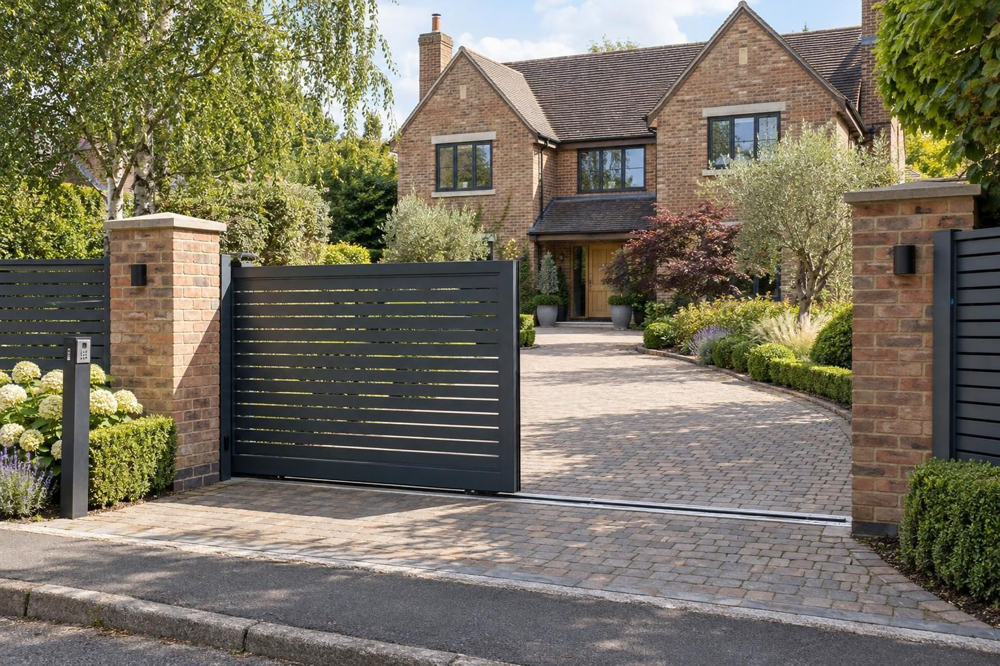

Driveway gates
Sliding and swing driveway gates in Rutland, Stamford and the villages around them, automated and safety-tested, on foundations built for them.
A new automated sliding gate typically costs £5,000–£10,000 supplied and fitted, and automated swing gates £4,000–£8,000. Automating gates you already have is usually £1,500–£3,000. The power supply is priced on top. Gates are normally permitted development up to 2m high, or 1m next to a road used by vehicles.
- Automated sliding gate
- £5,000–£10,000
- Planning
- Not needed up to 2m (1m by a road)
- Guarantee
- 5 years, in writing
Guide prices from 2026 online price guides, at the higher end. Your fixed price comes in writing after the site visit.
What it is
We fit sliding and swing driveway gates in aluminium and composite, on posts and foundations built for the weight, with automation, keypads and safety devices installed and tested to the standard.
Built to carry the weight
A sliding gate runs on a track and needs a level foundation beam; a swing gate hangs off posts that have to stay plumb for years. We build both properly, because that is what keeps an automated gate working.
Safety first
Automated gates can trap and crush, so every one we fit gets safety edges or photocells and a force test after installation, with the results written down for you.
Planning
Gates are normally permitted development up to 2m high, or 1m next to a road used by vehicles. They must not open outwards over the footway or road. In a conservation area or on a listed house, gates facing the road can need permission. Planning Portal: fences, gates and walls
What you get
- Sliding and swing gates in aluminium and composite, matched to your fencing
- Foundations and posts built for the gate's weight and the motor
- Automation, keypads, intercoms and remote fobs
- Safety edges and photocells, force-tested to the standard
The specification
- Survey of the opening, the slope and the power route
- Foundation beam or post footings in concrete
- Gate hung or track set, level and true
- Motor, controls and safety devices fitted
- Power by a registered electrician, then force-tested
- Five year workmanship guarantee in writing

The kind of finish we build

Rated 5.0 from 37 Google reviews
“Done a great job doing my sandstone patio and block paved drive in Corby, 10/10 service and very helpful with helping pick a design. Highly recommend”
Daniel, Corby · Sandstone patio and block paved drive — Google review
“We really like our resin driveway the team installed for us in Oakham. Well done 👏💪”
Xhulian, Oakham · Resin driveway — Google review
Things people ask us
How much does a driveway gate cost?
Should I choose sliding or swing driveway gates?
Are electric driveway gates safe?
Do I need planning permission for driveway gates?
What happens to electric gates in a power cut?
What safety standard do electric driveway gates have to meet?
How long do electric driveway gates last?
Are aluminium, composite or wooden driveway gates better?
How far back from the road should driveway gates be set?
Do electric gates need a power supply from the house?
How long does it take to install electric driveway gates?
Should I choose underground or arm motors for swing gates?
Driveway gates near you
- Driveway gates in Oakham
- Driveway gates in Uppingham
- Driveway gates in Stamford
- Driveway gates in Market Harborough
- Driveway gates in Corby
- Driveway gates in Kettering
- Driveway gates in Ketton
- Driveway gates in Empingham
- Driveway gates in Cottesmore
- Driveway gates in Greetham
- Driveway gates in Langham
- Driveway gates in Whissendine
- Driveway gates in Ryhall
- Driveway gates in Edith Weston
- Driveway gates in Weldon
- Driveway gates in Great Bowden
What driveway gates cost
Our driveway gates cost guide breaks the price down: what is included, what changes it and what to check in any quote.
Request a site visit
We measure up, check levels and drainage, and send a written proposal with the build-up, the programme and one whole price. No pressure and no follow-up sales calls.